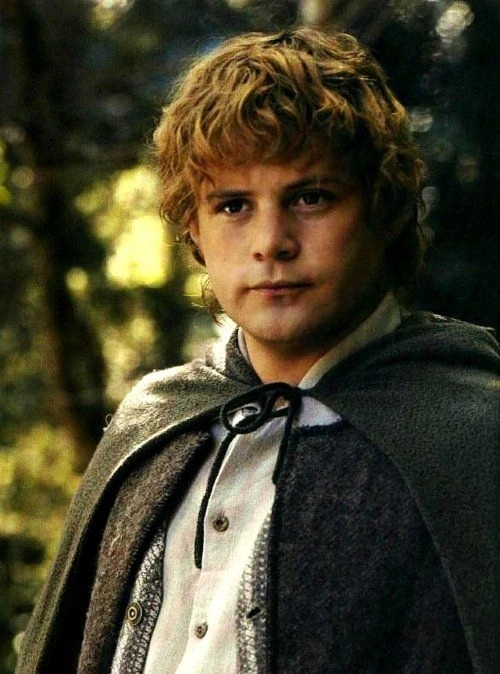

Gallery
-

Frodo Baggins
Ring-Bearer
A young Hobbit of the Shire chosen to carry the One Ring to Mount Doom. Brave and compassionate despite his quiet nature.
-

Samwise Gamgee
Frodo’s Companion and Protector
Loyal and practical, Sam is Frodo’s emotional anchor. His bravery and heart keep the quest alive when all seems lost.
-

Gandalf the Grey
Wizard and Mentor
A wise, powerful guide who values courage and hope. Transforms into Gandalf the White after confronting death and darkness.
-

Aragorn (Strider)
Ranger, Heir to Gondor
Noble and skilled in battle, Aragorn is a reluctant heir who grows into a true king and unites the free peoples of Middle-earth.
-
Legolas
Elven Archer and Scout
Graceful and deadly, Legolas is an Elven prince with unmatched precision, agility, and sharp perception in battle.
-
Gimli
Dwarven Warrior
Fierce and loyal, Gimli is a proud Dwarf who finds friendship with Legolas and represents resilience and honor.
-
Gollum (Sméagol)
Former Ring-Bearer, Guide to Mordor
A tormented creature torn between his humanity and obsession with the Ring. Cunning, pitiful, and split between two identities.
-
Meriadoc "Merry" Brandybuck
Hobbit Fighter and Strategist
A clever and bold Hobbit with a love for maps and knowledge. Merry is resourceful and proves his bravery in battle and loyalty to Pippin.
-
Peregrin "Pippin" Took
Hobbit Scout and Messenger of Gondor
Cheerful and curious, Pippin matures through hardship and shows great heart and bravery when it matters most.